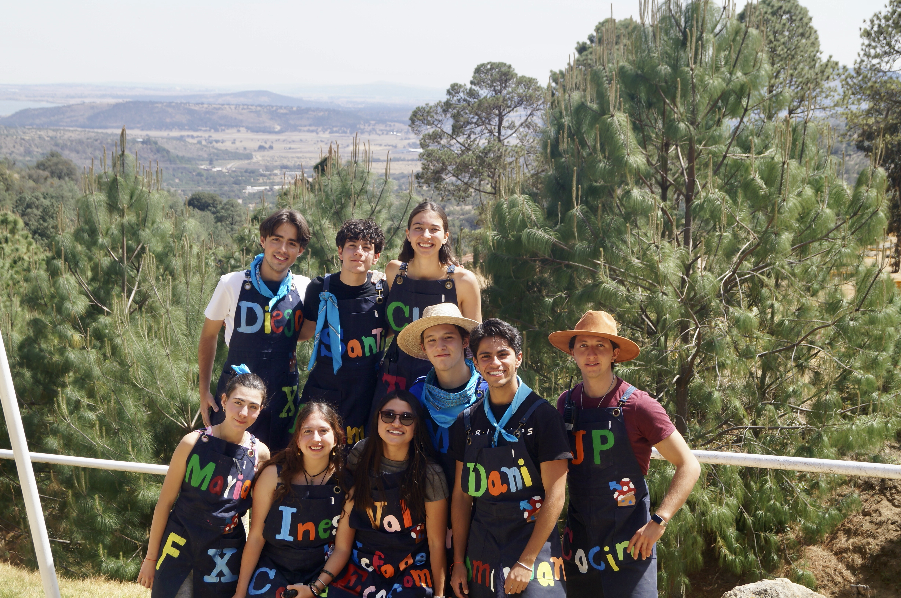

Formamos líderes que cambian el mundo
Somos el Grupo Scout 51. Desde hace más de 65 años formamos niños y jóvenes en Jardines del Pedregal, CDMX — con aventura, valores y comunidad.
Nuestra misión: contribuir a la educación de los jóvenes a través de un sistema de valores basado en la Promesa y la Ley Scout, para ayudar a construir un mundo mejor.
ENCUENTRA TU SECCIÓN
El grupo se divide en secciones según la edad, cada una con su propio estilo, mística y objetivos.
MÁS DE 65 AÑOS HACIENDO HISTORIA
El 13 de noviembre de 1957, los Misioneros del Espíritu Santo formaron el Grupo 51 con tres ramas: Lobatos, Tropa y Clan. Hoy continuamos formando líderes cada sábado en el Parque Luis Barragán.
El grupo se divide en secciones con objetivos diferentes, cada una con su propio estilo, trabajando en conjunto.




NUESTROS VALORES
SERVICIO
Aprender a servir a la comunidad y a los demás, dejando el mundo un poco mejor de como lo encontramos.
COMPROMISO
Formar jóvenes comprometidos con su comunidad, su país y el mundo a través de la educación no formal.
AVENTURA
Vivir experiencias al aire libre que retan el cuerpo y el espíritu, forjando el carácter y la resiliencia.
HORARIOS DE REUNIÓN
CONTACTO
Nos reunimos todos los sábados en Jardines del Pedregal, CDMX. Ven a conocernos.
Escríbenos por WhatsApp